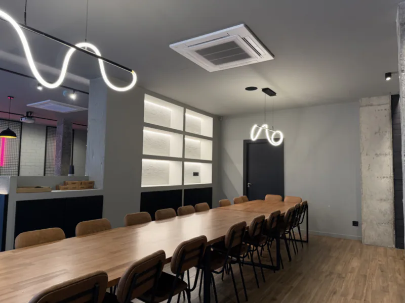

Si alguna vegada has anat a un aniversari, un casament o qualsevol celebració amb gent de Veneçuela, és gairebé segur que t'has trobat una safata de tequeños. Són uns bastonets de formatge embolicats amb massa i fregits, i en els darrers anys es veuen cada cop més a les cartes de tapes de bars i restaurants d'Espanya, cosa que se sol relacionar amb l'arribada de molts veneçolans i amb com funcionen de bé els tequeños precuinats. Molta gent els ha tastat sense saber gaire què són ni d'on surten, i la resposta té la seva història.
Què és exactament un tequeño
La definició més clara la dona el diccionari històric veneçolà que cita el diari La Verdad de Monagas: «un trocet longitudinal de formatge blanc embolicat amb tires de massa de farina de blat». És a dir, un bastó de formatge al qual s'enrotlla una tira de massa en espiral, com es veu a la foto, i que després es fregeix en oli ben calent. El formatge és un formatge blanc fresc i semidur; a Veneçuela, el més habitual és el llanero, que aquí es troba sobretot en botigues de productes llatins.
La massa tampoc no té secret: farina de blat, sal i mantega com a base, i segons la recepta, un ou i una mica de llet. El que fa el tequeño és la combinació d'una capa fina i daurada per fora amb el formatge calent a dins, i per això se serveixen acabats de fer.
Un origen a Los Teques, amb diverses versions
El nom ja dona la pista: els tequeños vénen de Los Teques, a l'estat de Miranda, a Veneçuela. El que no està tan clar és quan i a quina cuina van néixer, perquè no hi ha cap document que ho provi i el que circula són relats que s'han anat explicant. La versió amb més crèdit, segons la revista Meer, els situa a la cuina de la família Báez, a Los Teques, a principis del segle XX, preparats per a una celebració important.
Un cronista local, citat pel canal NTN24, porta els seus antecedents a finals del segle XIX i principis del XX, als anys del Gran Ferrocarril de Veneçuela, i atribueix la recepta a Josefina Báez, una de les germanes Báez: hauria aprofitat les sobres de massa per embolicar trossos de formatge i fregir-los en sagí. La periodista veneçolana Luisana La Cruz parla també d'unes germanes de Los Teques que venien pastissets i feien servir la farina que els sobrava, tot i que ho situa al segle XIX. Les versions no coincideixen en la data, però sí en l'essencial: un plat d'aprofitament nascut en una casa de Los Teques.
Segons Meer, el nom l'hi van posar a Caracas, on els venedors l'anunciaven cridant «¡Llegaron los tequeños!». Fos exactament així o no, el tequeño va acabar sent tan de la capital com del seu poble d'origen.
«Festa sense tequeño no és festa»
A Veneçuela el tequeño és, sobretot, menjar de celebració. Se serveix en casaments, batejos, primeres comunions i aniversaris, i la dita que recull Meer ho resumeix bé: «festa sense tequeño no és festa». Amb el temps també s'ha colat en esmorzars i berenars, i avui es venen congelats per fregir-los a casa.
Los Teques en presumeix sempre que pot. El 21 d'octubre de 2023 la ciutat va preparar un tequeño de 15,30 metres, amb 16 quilos de formatge i 55 de farina, que Guinness va reconèixer deu dies després com el més llarg del món. El 21 d'octubre, una data lligada a la història de la ciutat, ja s'hi celebra com el dia del tequeño, i el 2026 el municipi ha demanat a l'Assemblea Nacional que sigui oficialment el Dia Nacional del Tequeño.
Com es fan a casa
La recepta de Directo al Paladar, per a uns vint tequeños, porta 250 grams de farina, un ou, 80 grams de mantega, 5 de sal, 5 de sucre, 40 de llet i 300 de formatge. La mantega, a daus, es barreja amb la farina, la sal i el sucre fins que semblin molles; després s'hi afegeix l'ou i la llet a poc a poc, sense pastar, perquè cada farina en demana una quantitat diferent. La massa s'estira, es doblega sobre si mateixa, es gira i es torna a estirar diverses vegades, i es deixa reposar tapada uns minuts.
El formatge es talla en bastonets d'uns sis centímetres per un. La massa s'estira fins a uns dos mil·límetres i es talla en tires, s'unta amb una mica d'aigua i s'enrotlla al voltant de cada bastonet, muntant una mica cada volta sobre l'anterior perquè no quedin forats per on s'escapi el formatge. Es fan rodar entre les mans perquè la massa s'enganxi bé i es fregeixen en oli abundant, remenant, fins que es dauren, cosa d'un minut. S'escorren sobre paper i se serveixen calents. A Veneçuela la salsa més típica per acompanyar-los és la guasacaca, d'alvocat, tot i que també es mengen amb salsa de tomàquet.
On menjar tequeños a Lleida
A Vibra, a Cappont, els tequeños són entre les tapes de la carta: són de formatge llanero i vénen amb melmelada de tomàquet per sucar, cinc per ració, a 8,00 €. Els trobaràs a la carta.
